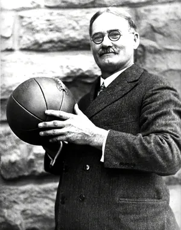

Basketball was invented in December 1891 by Dr. James Naismith, a Canadian physical education instructor working at the YMCA International Training School in Springfield, Massachusetts. Naismith wanted to create a new indoor game to keep his students active during the cold winter months. He wrote down 13 basic rules and used a soccer ball along with two peach baskets nailed to opposite ends of a gym balcony as the goals. The objective was simple: throw the ball into the opponent's basket. Unlike many rough games of the time, Naismith designed basketball to emphasize skill, teamwork, and less physical violence.

| Player | Team(s) Played For | Points Per Game (PPG) | Assists Per Game (APG) | Rebounds Per Game (RPG) | Championships | MVP Awards |
|---|---|---|---|---|---|---|
| Michael Jordan | Chicago Bulls, Washington Wizards | 30.1 | 5.3 | 6.2 | 6 | 5 |
| LeBron James | Cavaliers, Heat, Lakers | 27.0 | 7.4 | 7.5 | 4 | 4 |
| Kareem Abdul-Jabbar | Bucks, Lakers | 24.6 | 3.6 | 11.2 | 6 | 6 |
| Kobe Bryant | Los Angeles Lakers | 25.0 | 4.7 | 5.2 | 5 | 1 |
| Magic Johnson | Los Angeles Lakers | 19.5 | 11.2 | 7.2 | 5 | 3 |
| Larry Bird | Boston Celtics | 24.3 | 6.3 | 10.0 | 3 | 3 |
| Shaquille O'Neal | Magic, Lakers, Heat, etc. | 23.7 | 2.5 | 10.9 | 4 | 1 |
| Stephen Curry | Golden State Warriors | 24.8 | 6.4 | 4.7 | 4 | 2 |
While LeBron James is one of the most versatile and accomplished players in NBA history, many argue that Michael Jordan is still the true GOAT (Greatest of All Time). Jordan went a perfect 6–0 in the NBA Finals, never needing a Game 7 to secure a championship, and earned six Finals MVPs along the way. His relentless competitive spirit, legendary scoring ability, and dominance in the clutch set a standard that no one has fully matched. Beyond the numbers, Jordan's global impact helped elevate basketball into a worldwide phenomenon, inspiring generations of players. LeBron's longevity and all-around skill are remarkable, but Jordan's unmatched winning mentality and flawless Finals record solidify his place as the ultimate benchmark in basketball greatness.